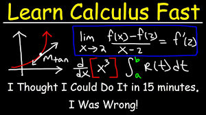
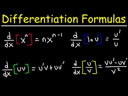
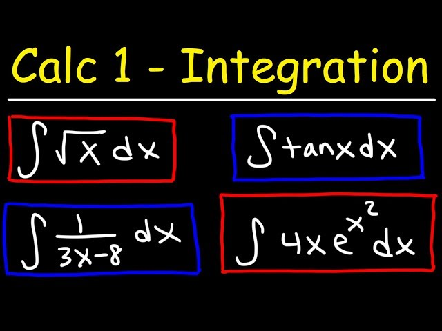
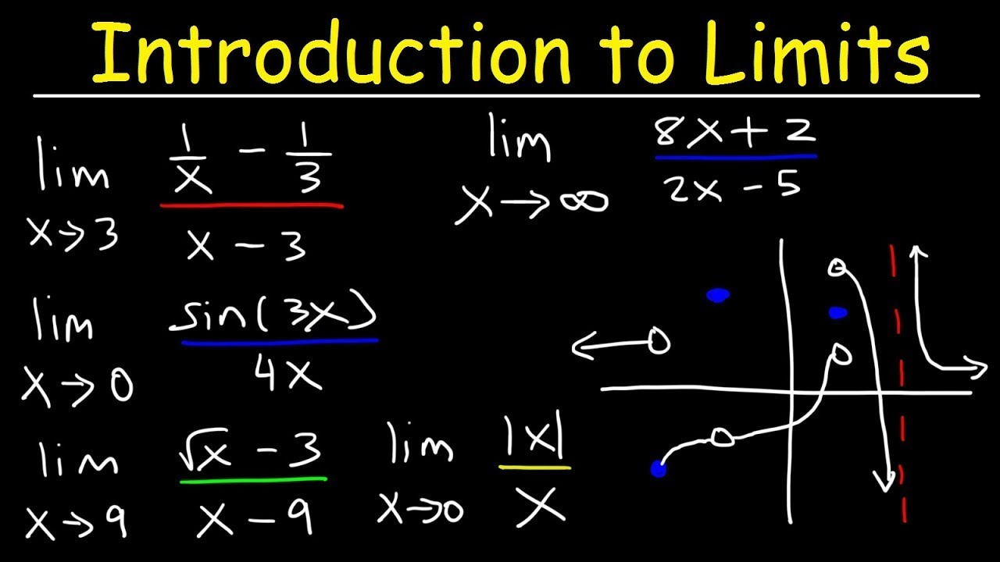

First Referenced Image

Second Referenced Image

Third Referenced Image

Fourth Referenced Image

Links
The Organic Chemistry Tutor. (2018). Understand calculus in 35 minutes [Video thumbnail]. https://www.youtube.com/watch?v=WsQQvHm4lSw
The Organic Chemistry Tutor. (2018). Calculus differentiation formulas [Image]. https://www.youtube.com/watch?v=AdLAkD-r9Rs
The Organic Chemistry Tutor. (2018). Calculus integral formulas [Image]. https://www.youtube.com/watch?v=6WUjbJEeJwM
The Organic Chemistry Tutor. (2018). Introduction to limits [Image]. https://www.youtube.com/watch?v=GiCojsAWRj0&list=PL0o_zxa4K1BWYThyV4T2Allw6zY0jEumv